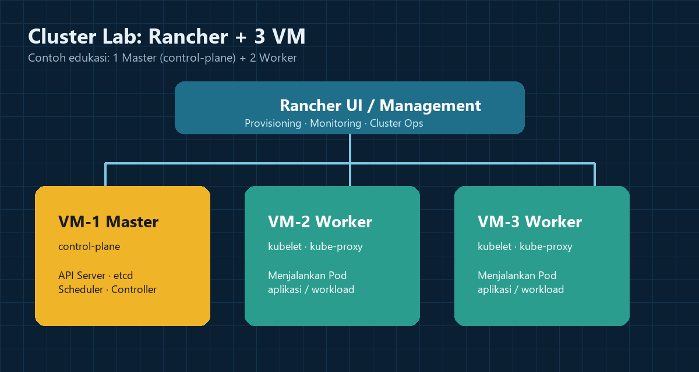

1. Konsep dasar
Memahami peran Kubernetes, node, pod, dan mengapa Rancher memudahkan manajemen cluster.
Buka konsep →Modul Edukasi DevOps
Pelajari cara merancang cluster K8s menggunakan contoh 3 VM: 1 master + 2 worker yang dikelola Rancher — langkah demi langkah, untuk pemula.
Website ini dibuat sebagai project UAS Pemrograman Web I dengan komponen HTML, CSS, Bootstrap, dan JavaScript sesuai materi pertemuan 9–15.

Ringkasan jalur belajar singkat sebelum Anda masuk ke lab virtual machine.
Memahami peran Kubernetes, node, pod, dan mengapa Rancher memudahkan manajemen cluster.
Buka konsep →Skema master (control-plane) dan worker, lengkap dengan tabel spesifikasi lab.
Buka arsitektur →Urutan instalasi Rancher, join node, hingga cek status cluster — plus media & form latihan.
Buka panduan →Tiga mesin virtual cukup untuk meniru lingkungan produksi kecil: satu node mengurus control-plane, dua node menjalankan workload. Pola ini cocok untuk laboratorium kampus maupun belajar mandiri.
Dipublikasikan pada untuk UAS semester genap 2025/2026.